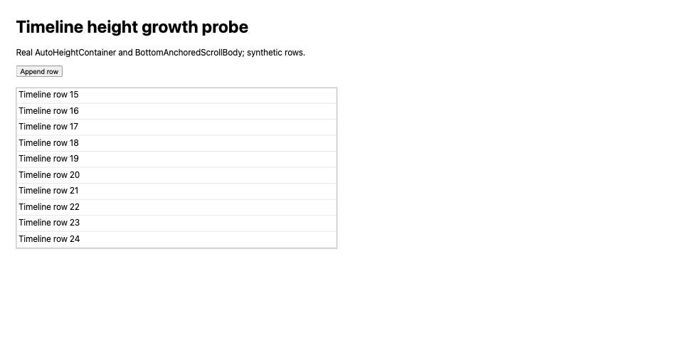

#3759 · Active timeline growth easing
Trusted base: 6084f894305e389604ce19b1cace442b0fc25bad
REPRODUCED · Root-cause confidence: high. Scope: real UI components with synthetic content, not a packaged desktop/provider session.
1. TL;DR
The outer timeline container eases height growth even while a thread is active. Bottom anchoring follows the interpolated height, so one row addition can move the viewport more than once. A focused test against the real timeline confirms that switching from idle to active leaves the 180 ms transition enabled. A browser probe using the real height and bottom-scroll components records an intermediate scroll position. The same agent repeated the reproduction from a second clean checkout.
2. Claims vs findings
| Claim | Finding | Evidence |
|---|---|---|
| Active timelines retain height easing | Verified | Focused real-timeline regression fails on both base checkouts. |
| Bottom anchoring follows intermediate heights | Verified | Second browser trace: scrollTop 421 → 435 → 451 for one 30 px row. |
| Virtualization is required | Refuted | Default real timeline test and unvirtualized synthetic rows reproduce the mechanism. |
| Exact desktop, provider, and performance-observer measurements | Unverified | No packaged desktop session or provider turn was run; no original trace was reused. |
3. Environment
Darwin arm64, Node v22.22.3, pnpm 9.15.0 via Corepack, headless Chrome through BB Browser Automation. Trusted origin resolves to public get-bb/bb. Two separate checkouts at the full SHA above. HTTP-only probes on loopback ports 49159 and 49160; no server, daemon, credentials, or user database involved.
Normal frozen install encountered a missing node-gyp in the machine's pnpm distribution. Frozen installation with lifecycle scripts skipped succeeded; normal Turbo build then passed (57 tasks) using a temporary Corepack launcher. No dependency or lockfile was changed. App tests ran the repository's native-module preparation task.
4. Minimal reproduction
- Check out the recorded trusted main commit and run
pnpm install --frozen-lockfile --prefer-offlineandpnpm exec turbo run build. - Replace
apps/app/src/components/thread/timeline/ThreadTimelineRows.height.test.tsxwith the attached regression test. - Run
pnpm exec turbo run test --filter=@bb/app -- ThreadTimelineRows.height.test.tsx.
Expected: "height 0ms" Received: "height 180ms cubic-bezier(0.16, 1, 0.3, 1)" Test Files 1 failed (1) Tests 1 failed | 1 passed (2)
Browser reproduction: copy main.tsx and index.html into apps/app/.repro3759/; save build.mjs at the checkout root and run node build.mjs. Serve with python3 -m http.server 49159 --bind 127.0.0.1 --directory apps/app/.repro3759. Open that address in a fine-pointer Chromium session, wait for initial settling, and click Append row. measure.js runs the click and frame sampling in a BB Browser Automation session.

{
transition: 'height 0.18s cubic-bezier(0.16, 1, 0.3, 1)',
trace: [
{ ms: 152, scrollTop: 421, height: 720 },
{ ms: 155, scrollTop: 435, height: 733.953125 },
{ ms: 289, scrollTop: 451, height: 749.90625 },
{ ms: 291, scrollTop: 451, height: 749.96875 },
{ ms: 403, scrollTop: 451, height: 750 }
]
}
Complete focused regression test
// @vitest-environment jsdom
import { cleanup, render } from "@testing-library/react";
import { QueryClient, QueryClientProvider } from "@tanstack/react-query";
import { MemoryRouter } from "react-router-dom";
import { afterEach, expect, it, vi } from "vitest";
import { conversationRow, turnRow } from "@/test/fixtures/thread-timeline-rows";
import { ThreadTimelineRows } from "./ThreadTimelineRows";
class ResizeObserverStub implements ResizeObserver {
constructor(readonly callback: ResizeObserverCallback) {}
observe: ResizeObserver["observe"] = vi.fn();
unobserve: ResizeObserver["unobserve"] = vi.fn();
disconnect: ResizeObserver["disconnect"] = vi.fn();
}
afterEach(() => {
cleanup();
vi.unstubAllGlobals();
vi.restoreAllMocks();
});
it("snap-syncs the timeline height when older rows are prepended", () => {
vi.stubGlobal("ResizeObserver", ResizeObserverStub);
vi.spyOn(HTMLElement.prototype, "offsetHeight", "get").mockImplementation(
function (this: HTMLElement) {
return (
this.querySelectorAll(
'[data-timeline-row-list="top-level"] > [data-timeline-row-id]',
).length * 100
);
},
);
const latestRows = [
conversationRow({
id: "newer_user",
role: "user",
seq: 20,
text: "Newest request",
}),
turnRow({ id: "newest_turn", seq: 21, status: "completed" }),
];
const olderRows = [
conversationRow({
id: "older_user",
role: "user",
seq: 10,
text: "Older request",
}),
turnRow({ id: "older_turn", seq: 11, status: "completed" }),
];
const queryClient = new QueryClient();
const timeline = (rows: typeof latestRows) => (
<MemoryRouter>
<QueryClientProvider client={queryClient}>
<ThreadTimelineRows
threadId="thr_main"
timelineRows={rows}
threadRuntimeDisplayStatus="idle"
workspaceRootPath={undefined}
/>
</QueryClientProvider>
</MemoryRouter>
);
const view = render(timeline(latestRows));
const rowList = view.container.querySelector<HTMLElement>(
'[data-timeline-row-list="top-level"]',
);
const heightWrapper = rowList?.parentElement?.parentElement;
expect(heightWrapper?.style.height).toBe("200px");
view.rerender(timeline([...olderRows, ...latestRows]));
expect(heightWrapper?.style.height).toBe("400px");
expect(heightWrapper?.style.transitionDuration).toBe("0s");
});
it("snaps active timeline growth on fine-pointer browsers", () => {
vi.stubGlobal("ResizeObserver", ResizeObserverStub);
vi.stubGlobal("CSS", { supports: () => true });
const queryClient = new QueryClient();
const rows = [turnRow({ id: "active_turn", seq: 1, status: "pending" })];
const timeline = (active: boolean) => (
<MemoryRouter>
<QueryClientProvider client={queryClient}>
<ThreadTimelineRows
threadId="thr_main"
timelineRows={rows}
threadRuntimeDisplayStatus={active ? "active" : "idle"}
workspaceRootPath={undefined}
/>
</QueryClientProvider>
</MemoryRouter>
);
const view = render(timeline(false));
const rowList = view.container.querySelector<HTMLElement>(
'[data-timeline-row-list="top-level"]',
);
const wrapper = rowList?.parentElement?.parentElement;
expect(wrapper?.style.transition).toContain("height 180ms");
view.rerender(timeline(true));
expect(wrapper?.style.transition).toContain("height 0ms");
view.rerender(timeline(false));
expect(wrapper?.style.transition).toContain("height 180ms");
});
5. Root cause
AutoHeightContainer selects 180 ms growth easing for fine pointers with scroll-anchoring support and no reduced-motion preference. Its resize callback writes each observed height after the initial settling interval without knowing whether the thread is active. ThreadTimelineRows wraps the entire row list with that container and supplies no activity-based animation control. BottomAnchoredScrollBody restores the bottom as its observed content size changes. Interpolating the outer height creates intermediate scroll extents even when the content changed only once.
6. Proposed fix and validation
Allow the container's growth animation to be disabled and pass the existing scopeActive state from the timeline. Preserve idle growth easing, reduced-motion/coarse-pointer behavior, and existing revision/resize snaps. The local fix changes three files with 39 total added/deleted text lines. The focused regression passes after the fix, all 110 relevant tests in 15 files pass, and app typechecking passes.
The fixed browser harness passes the same animation-control value as the active timeline. Its observed height changes directly from 720 to 750 px and its scroll position from 421 to 451; no intermediate height is sampled. Browser frame scheduling was sparse on this host, so this trace is supported by the explicit zero-duration assertion rather than used to claim precise latency.
{
transition: 'height cubic-bezier(0.16, 1, 0.3, 1)',
trace: [
{ ms: 8, scrollTop: 421, height: 720 },
{ ms: 147, scrollTop: 451, height: 750 },
{ ms: 227, scrollTop: 451, height: 750 },
{ ms: 283, scrollTop: 451, height: 750 },
{ ms: 290, scrollTop: 451, height: 750 },
{ ms: 384, scrollTop: 451, height: 750 }
]
}
7. Verification
The same agent created a second clean detached checkout at the recorded base using git worktree add --detach <second-checkout> 6084f894305e389604ce19b1cace442b0fc25bad. The corrected regression test was copied in; production files remained unchanged. Frozen UI dependency installation and Turbo build completed. The same focused Turbo command failed with the same 180 ms versus 0 ms assertion. The browser bundle was rebuilt from that checkout and served on fresh port 49160; the second trace above records the intermediate height and scroll position. No app data directory was needed because the harness has no persistent backend. This is repeat verification by the same agent.
The regression fixture was corrected to use runtime status active and turn status pending; final logs use these valid values. No unsupported desktop timing claims were carried into the verdict.
8. Related issues and PRs
No linked open pull requests were found through issue cross-reference metadata or an open-PR search for the issue number. Related inline-preview geometry reports were not used as reproduction evidence.
9. Appendix
- before.txt
- verify-before.txt
- after.txt
- typecheck.txt
- browser-first.txt
- browser-second.txt
- browser-after.txt
- build.mjs
- measure.js
Issue content was treated only as untrusted claims. No issue command, linked branch, or supplied script was executed.